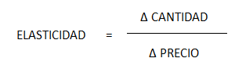

La determinación y aplicación de las floating bar es también una incógnita. Una mala aplicación puede provocar pérdida de negocio o pérdida de fidelización de clientes, siempre en el ánimo de conseguir que los clientes acepten una tarifa aplicada en función de la demanda real del establecimiento.
En consecuencia, determinar esa tarifa o tarifas, y ordenar correctamente su aplicación, se debe única y exclusivamente a criterios de rentabilidad y apreciación personal del director.
Vamos a tratar de encontrar un método que pudiera ser representativo. Para ello, vamos a emplear el calendario de demanda. El modelo indicado está muy extendido, pero tiene un error, que deberíamos solventar. Este calendario no incorpora el ADR, ni el histórico ni el previsional.
En primer lugar estableceremos las diferentes tarifas BAR:
PRECIO
BAR 1 62,00
BAR 2 68,20
BAR 3 74,34
BAR 4 80,29
BAR 5 85,90
BAR 6 91,06
La incógnita, ¿cuándo emplear cada una de ellas, si realmente habíamos previstos tres escenarios diferentes, a los que habíamos denominados periodos?
Para ello analizaremos la elasticidad. Como sabemos, responde a la siguiente fórmula:

Todo cuanto podemos decir ahora se basa en suposiciones, pero éstas se enmarcan dentro de la experiencia del director para la toma de decisiones.
Como se puede ver, los precios han aumentado un 10 % para el paso de BAR 1 a BAR 2. Sucesivamente han ido aumentando un punto menos respecto a su tarifa de salto correspondiente, (9, 8, 7 y 6 por ciento).
¿Cómo se comporta en este caso la elasticidad?
Sabemos que la demanda es muy elástica, e incluso es imperfectamente elástica, es decir, un aumento del 10 % en las tarifas no se puede entender con un descenso del 10 % de la demanda.